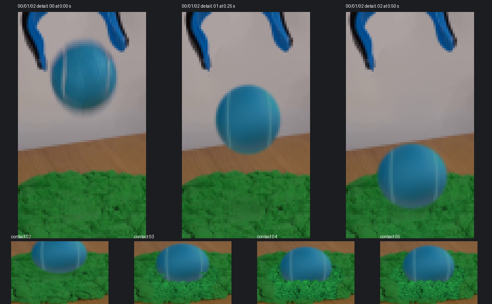
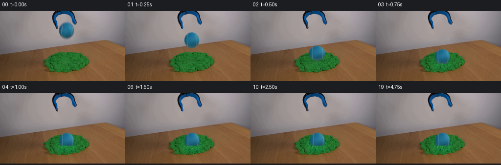

Observable Agent Trace
Code Agent 是怎样生成这段像素视频的？
这里只展示可以从文件和日志核验的行为，不展示或编造隐藏思维链。左边是实际输出，右边是 agent 从接任务到交付的完整动作序列。
最终像素视频
Physics-IQ 87.8134输入限制：只允许读取本例首帧与文本描述。
centers = [40.8, 60.0, 86.5, 94.0, 97.0,
96.0, 96.6, 96.8, 96.7, 96.7] + [96.7]*10
for t in range(1, 20):
canvas = BASE.copy()
canvas = draw_contact_patch(canvas, impacts[t])
canvas = draw_new_ball_rgb(canvas, centers[t])
canvas = draw_front_sand_lip(canvas, impacts[t])
frames.append(to_uint8_rgb(canvas))
Agent 行为记录
总生成约 3分41秒领取一个隔离 case
新 agent pixel_0016 启动，只获得自己的 first_frame.png、prompt.txt 和公共保存规则。
实际打开首帧并测量
记录球中心约 (135.5, 41)、半径约 15.5；沙堆范围约 x=89..181、y=84..126；判断主光源在左上方。
先写 20 帧事件表
规划“释放 → 下落 → 触沙 → 入沙 → 最深 → 弱回弹 → 沉降 → 静止”，再开始写生成代码。
从零编写 generate.py
代码重算球的椭圆轮廓、青蓝毛毡、弯曲接缝、阴影、沙坑和前侧沙唇；没有移动首帧里的球贴图。
执行程序并输出像素
生成 20 张 256×144 RGB PNG，同时打包为 uint32[144,256,20] 的 0xRRGGBB 像素张量。
打开检查图，自行找问题
查看 00/01/02 和 8 个关键时点。发现球离开后，夹具的蓝色被错误插值进灰墙。
修改代码并重新生成
排除夹具边缘像素，用同一行两侧墙色修补背景；再次打开检查图，确认无蓝色残影、第二个球或浮空。
保存、校验、接受
PNG 与像素张量逐像素一致，00 与输入完全一致；根审确认沙唇遮住球底、弱回弹后稳定。
详细 Trace ①：Agent 如何理解首帧
Agent 先实际打开首帧和 4× 放大图，把摄影画面转成可执行的二维约束。这些数值写入了 OBSERVATION.md，之后才开始编程。
详细 Trace ②：20 帧事件与状态参数
视频不是让一个通用模拟器自由演化，而是 agent 先确定离散事件，再让代码根据 center_y、impact、半径与接缝转角计算每帧像素。
| 帧 | 时间 | 球心 y | impact | 球半径 rx × ry | 事件 |
|---|---|---|---|---|---|
| 00 | 0.00s | 40.8 | 0.00 | 原图 | 释放瞬间，逐像素保留输入 |
| 01 | 0.25s | 60.0 | 0.00 | 15.2 × 16.3 | 自由下落，软影收缩加深 |
| 02 | 0.50s | 86.5 | 0.16 | 16.4 × 15.3 | 首次触沙，轻微横向压扁 |
| 03 | 0.75s | 94.0 | 0.67 | 15.65 × 15.8 | 继续入沙，沙唇开始遮住球底 |
| 04 | 1.00s | 97.0 | 1.00 | 15.2 × 16.3 | 最大深度，凹坑与碎边最明显 |
| 05 | 1.25s | 96.0 | 0.91 | 15.2 × 16.3 | 弱回弹约 1 px，仍连续接触 |
| 06–08 | 1.50–2.00s | 96.6–96.7 | 0.95–1.00 | 15.2 × 16.3 | 碎沙回落、轮廓恢复、沉降 |
| 09–19 | 2.25–4.75s | 96.7 | 1.00 | 15.2 × 16.3 | 完全静止，不制造无理由微动 |
详细 Trace ③：一帧 RGB 是怎样合成的
动态对象不是从首帧裁剪后搬动。每一帧都从二维坐标、颜色场和覆盖率重新求值，并严格按下列层次合成：
# 原球离开后的背景补洞
hole = ((X-135.5)/18.6)**2 \
+ ((Y-41)/21.5)**2 < 1
A[k,k] = 4
A[k,neighbor] = -1
BASE[hole] = spsolve(A, rhs)
# 球先画，沙唇后画，建立遮挡
canvas = ball(canvas, cx, cy, rx, ry, spin)
lip_y = 109.2 - 2.3*p + .0048*dx*dx \
+ .55*sin(1.14*X) + .32*sin(2.37*X)
canvas = blend(canvas, sand_color, front_lip)
详细 Trace ④：Agent 如何看图、发现问题并返修
生成后，agent 没有用“文件存在”代替视觉检查。它实际打开首三帧放大图、接触帧和八时点检查表。初版发现夹具附近的蓝色进入墙面补洞区域，于是修改插值边界并重新生成。

00/01/02 放大对比，以及 02/03/04/05 接触过程。用于检查材质连续、背景残影和沙唇遮挡。

00、01、02、03、04、06、10、19 八时点。用于确认球弱回弹后停稳、背景不漂移。
仍然如实保留的局限
- 新球毛毡比摄影首帧略平滑，没有恢复每根真实绒毛。
- 沙粒和凹坑是二维显式重绘，并非颗粒物理模拟。
- 4 fps 下释放到接触只有两个采样间隔，快速碰撞没有高帧率细分。
- 首帧无法确定夹具是否还夹着球，因此把它解释为释放瞬间。
这条 trace 最重要的信息
Agent 不是在调用一个视频模型。它先把视觉场景转成坐标、事件和绘制规则，再由 Python 程序为每个时刻计算整张 RGB 数组。生成、查看、发现问题、改代码、重新生成，构成了一个小型的视觉 coding loop。